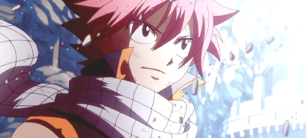

Natsu
Natsu é um mago do fogo e membro de uma guilda chamada Fairy Tail, a maior guilda de todos os tempos. Ele é personagem descontraÃdo e ao lado do seu pequeno amigo querido "Happy" está a procura de seu pai desaparecido.

Natsu é um mago do fogo e membro de uma guilda chamada Fairy Tail, a maior guilda de todos os tempos. Ele é personagem descontraÃdo e ao lado do seu pequeno amigo querido "Happy" está a procura de seu pai desaparecido.